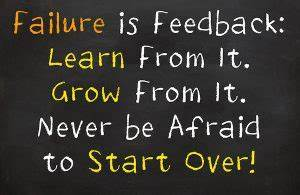

Persistence is a powerful force that propels individuals toward their goals, providing the tenacity needed to navigate the challenges of life. In the face of obstacles, staying persistent requires a clear vision and well-defined goals. When objectives are carefully outlined, it becomes easier to create a roadmap for success, breaking down the journey into manageable steps. This clarity not only fosters focus but also enables a systematic approach, allowing individuals to track their progress and make necessary adjustments along the way.
A crucial aspect of maintaining persistence is unwavering motivation. Identifying the underlying reasons for pursuing a goal serves as a constant reminder of the destination. Motivation acts as the fuel that propels individuals forward, especially during moments of adversity. Cultivating a strong support system further reinforces persistence. Surrounding oneself with encouraging friends, family, or mentors provides a network of guidance and motivation, turning challenging moments into opportunities for growth.
Resilience is the bedrock of persistence. Viewing setbacks not as failures but as stepping stones toward improvement fosters a mindset capable of weathering storms. Each setback becomes a valuable lesson, contributing to the individual's resilience and adaptability. Celebrating small wins, no matter how minor, is another tactic to bolster persistence. Recognizing achievements, however modest, provides a sense of accomplishment that fuels the drive to tackle the next challenge.

Staying persistent also demands flexibility. While a steadfast commitment to goals is crucial, being open to adjusting strategies in response to unexpected changes is equally important. The ability to pivot when necessary ensures that persistence remains an adaptable force. In this journey, self-care plays a pivotal role. Maintaining physical and mental well-being is essential for sustaining the energy and focus required for persistent effort.
In conclusion, persistence is not a mere act of pushing forward; it is a deliberate and strategic approach to achieving long-term goals. By setting clear objectives, staying motivated, building a support system, embracing resilience, and practicing self-care, individuals can harness the power of persistence to overcome challenges and realize their aspirations. In the tapestry of success, persistence weaves the threads that transform dreams into tangible realities.